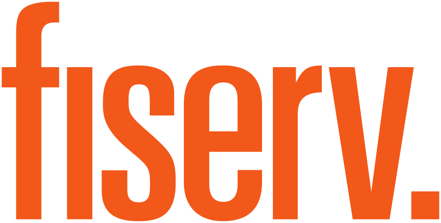
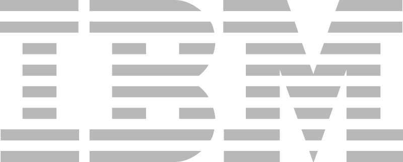
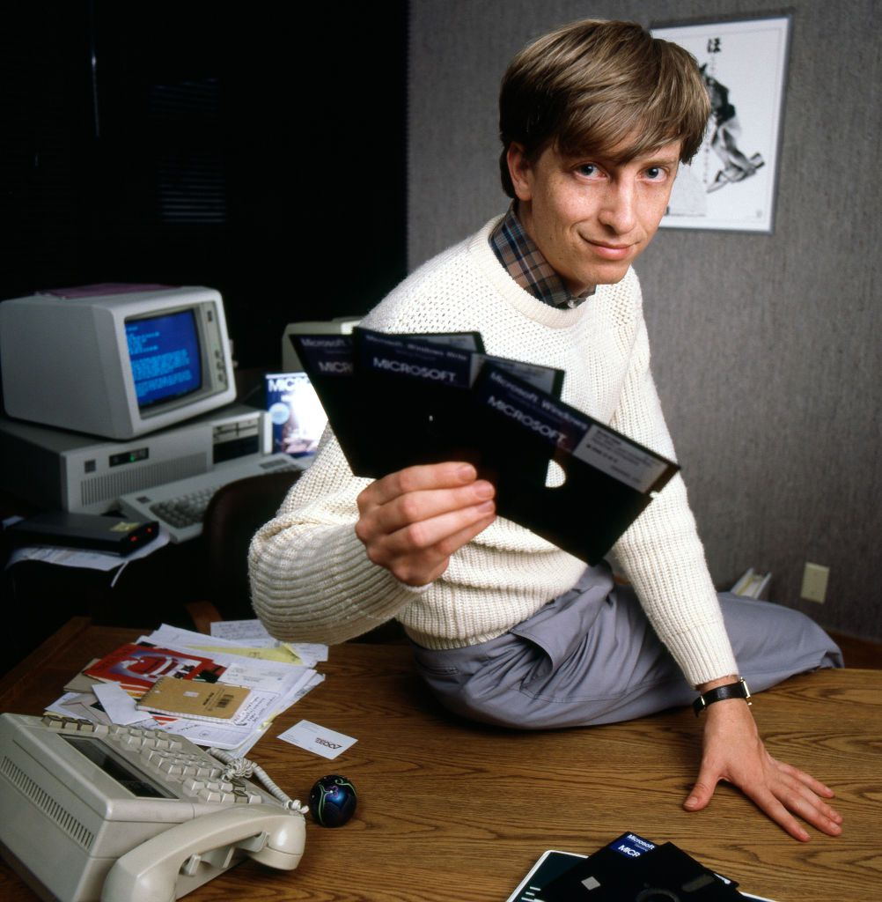
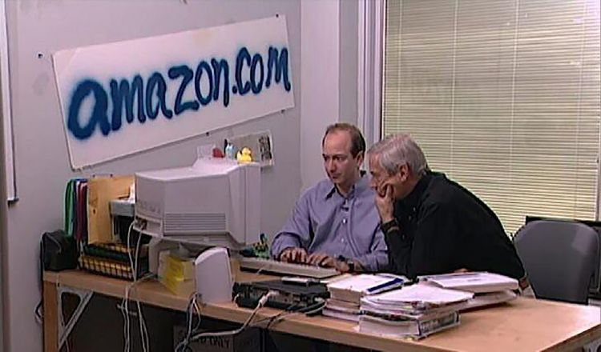
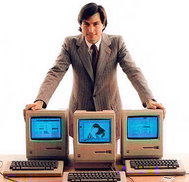
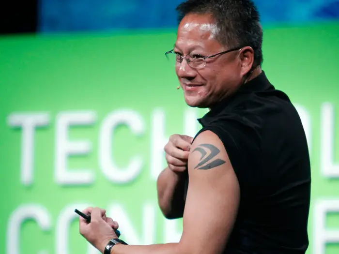

rutgers.
network
The elite distributed laboratory for student founders, engineers, and builders. Rutgers has talent, it's just fragmented.
Advisory Council // Institutional Support



For builders.
The network to find your co-founder, get in front of the right people, and ship something real.
Member Directory
Know who's building what. Find co-founders, collaborators, and the right people.
Warm Intros
Direct access to investors, operators, and alumni who back Rutgers talent.
Build Nights & Pitch Nights
Ship together weekly. Share what you're working on.
Curated Cohorts
Two cohorts a year. High-signal only.
Curated pipeline
Technical founders, operators, and researchers — already shipping, not just talking.
Warm intros
Cleaner paths to the right people—less cold outbound, more aligned conversations.
Build & pitch cadence
See founders shipping in real time. Diligence faster, decide earlier.
Rutgers lens
Early access to Rutgers-connected deals before they hit the broader market.
For VCs, advisors & speakers.
Access to a curated rutgers pipeline. Whether you're sourcing, advising, or sharing what you know — this is where the serious builders are.
Get in touch




Join Rutgers.Network.
Only two cohorts a year. Applications close April 30th.
Open application arrow_forwardBuild your local network.
We were inspired by and now work with the UCSB network — https://www.ucsb.network/
If you’re interested in starting a chapter on your campus, contact